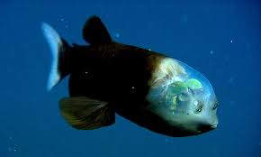
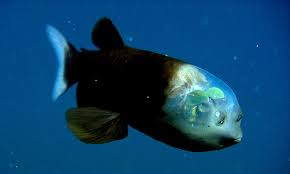

Descubra curiosidades fascinantes sobre o mundo ao nosso redor!
Você sabia?
O polvo tem três corações e o sangue azul!
Fato curioso
A lua se afasta da Terra cerca de 3,8cm por ano.
Fato curioso
Existem mais estrelas no universo do que grão de areia em todas as praias da Terra.
 
